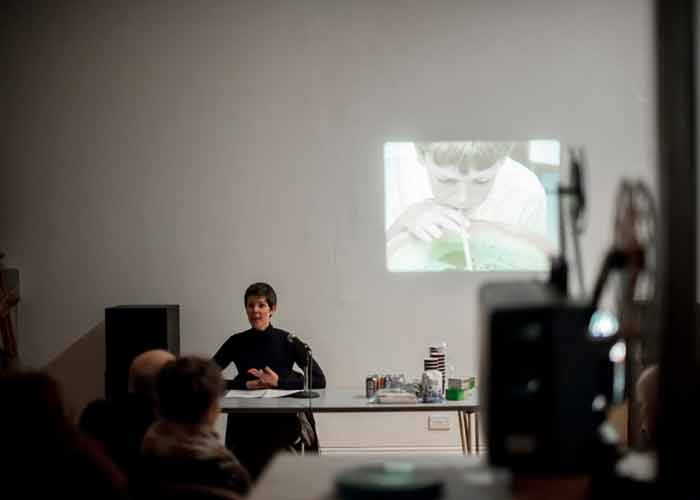
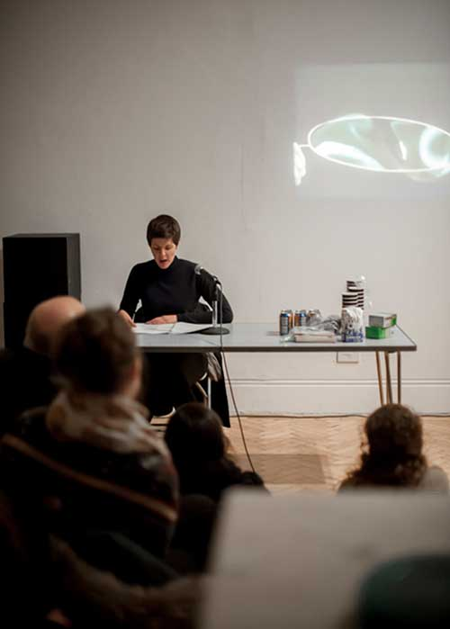
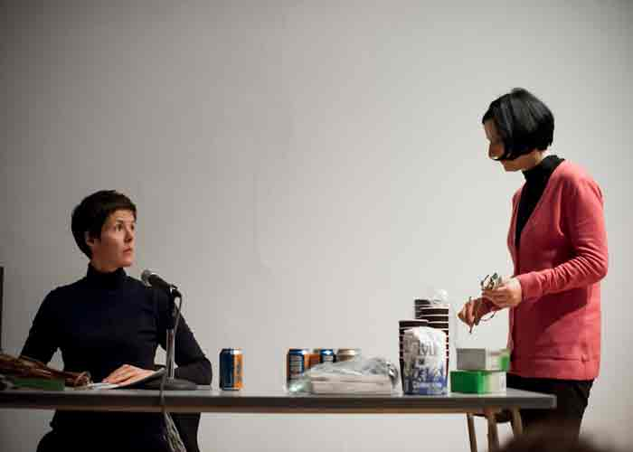

Camden Art Centre, 23rd of February 2013, part ot the "Film in Space", show curated by guy Sherwin
Claire Makhlouf Carter’s script DEMO KHAT is written in response to Hélène Martin’s invitation to collaborate in a performance event at Cafe Curio, Camden Arts Centre. Hélène Martin had an idea what film to show. She would never imagine the improvised screening would fir Claire's script so well. With Special Thanks to: Rachel Cockburn, Howard Swains and Nadia Visram.
  